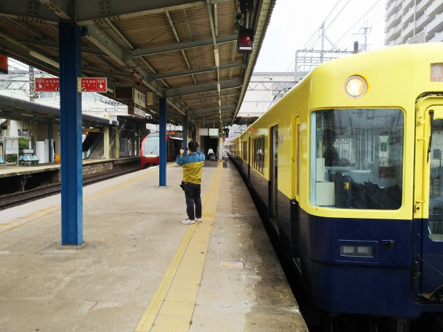

さて、ここは五位堂駅。特急待避です。
ちょうど乙特急に格下げになったアーバンライナー
が通過です。
次は大和八木でしまかぜに道をゆずります。久々に
しまかぜを目撃しました。
見た目はイマイチですが、車内のゴージャスさは外
から見ても一目瞭然。

榛原ではひのとりを待避です。
大きな駅に停まる度に特急待避って、なんか昔の客
車鈍行みたいで面白いです。
って、何してるのって？
今日は伊勢に向かってます。一時は１０００円割れ
してた株主優待券も、１７００円ほどまで値上がり
してもうて、困ったもんです。
終点の伊勢中川到着。
大阪からの急行で５２００系があたったのは初めて
かも。近鉄の一般車で一番好きな車両なので、今日
はついてるかも。色も旧特急の復刻塗装やし。
中川からは五十鈴川行の急行に乗換えましたが、こ
ちらも５２００系。鶴橋から伊勢まで５２００系で
来れるなんて、最高っすね。
五十鈴川からは、昔の街道を通って、伊勢市駅まで
歩きました。
古い街並みが残ってるという話やったのに、そんな
もんどこにもなかったがな。
昼をイートインコーナーで食べようと思って入った
ローソンでカップ麺買って食べようとしたら、お湯
沸いてないの気づかずに入れてもうて、いつまでた
も麺が堅いままで、結局食べれず・・・（キレてな
いっすっよ）
伊勢市には連接バスが走ってる！その前方は、路面
電車かと思いきや、復刻塗装のバスでした。
結構リアルなラッピングでビックリ！
ここで部活終わりの愚息と合流。
あいにくの天気で、ほんまは河崎の古い街並みまで
行く予定やったんですが、より近い、外宮に変更。
久々に赤福食べました。
外宮から戻って、参宮線で二見浦まで行こうと思っ
たら、なんと信号故障で参宮線は不通！
雨もやんできたし、しょうがないので、河崎へ。
（キレてないっすよ）
踏切で、伊勢方面に向かうアーバンライナーに遭遇。
これって珍しいんやないの？ひのとりが出来てから
は伊勢特急にも充当されてるんかな？

１５分ほど歩いて河崎に到着。
川に沿って、昔は物流業や商売で賑わった地区だそ
うです。
ん～、それほどでもなかったかなぁ・・・。
伊勢市駅に戻り、参宮線はあきらめて近鉄で鳥羽へ。
駅前のビルのレストラン街で見かけた子ども用の乗
り物。
そないに古いようには見えへんかったけど、かなり
のセンスっすね。
さてさて、鳥羽駅のホームに戻ってきました。
ん？貸切？？
ＧＷの近鉄の貸切列車って、例のミステリー列車を
思いおこしてしまうのですが・・・
じゃじゃ～ん！
そうです、団体専用車両の「楽」です。
このＧＷ、特別運行で上本町賢島間を往復してて、
窓口で号車指定の切符を買えたんです！
予想通り、マナーの悪い鉄オタのせいで席が占領さ
れてて、愚息とは別々の席に。
（なんで座席指定で売らへんかったのか謎）
ちゅーても、展望スペースは自由に座れるので、そ
んなに腹立ってません。（キレてないっすよ）
ここは後方の展望スペース。思ったより、視界が開
けてます。
停車駅は、鳥羽を出たら、宇治山田、伊勢市、名張
と続きます。
名張でようやく席が空きました。
大和八木でひのとり待避中にじっくり外観を見れま
した。
八木を出ると、次は鶴橋。
このあと、車掌さんもほっとしたのか、後ろの展望
スペースに愚息といると、「写真撮りましょか」と
声かけてくれました。
気の利く車掌もいるもんやと、ちょっと近鉄の車掌
を見直しました。
展望スペースの階下は、寝転べるスペースになって
ます。
ここもマナーの悪いオタクが占領してたのですが、
八木を出た頃にようやく空きました。
ここでごろんとするのは、なかなか気持ち良かった
っす。文字通り、「楽」でした。
無事上本町に到着。
今はやりの、椅子の背の大きい座席でないので視界
が広く、非常に乗ってて気持ちのいい「楽」しい車
両で した。